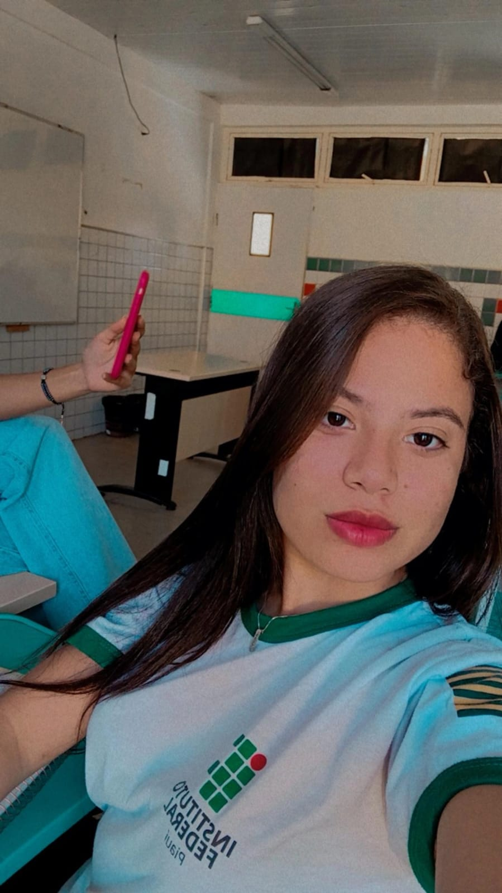

Sobre o Sabor Raiz
O Sabor Raiz foi criado com o objetivo de compartilhar a rica culinária nordestina e oferecer aos visitantes uma experiência única através de receitas tradicionais e autênticas. Nossa equipe se dedicou a criar um espaço que valoriza a cultura e os sabores do Nordeste.
Conheça as Desenvolvedoras
Luisa Clara
Sou Luisa Clara, desenvolvedora Back-End do Sabor Raiz. Tenho 16 anos e resido em Paulistana, no Piauí. Sou uma das desenvolvedoras deste site, criado com o propósito de levar um pedaço da cultura e da gastronomia nordestina para o mundo. Junto com minhas parceiras, planejamos cuidadosamente cada detalhe para proporcionar uma experiência autêntica e enriquecedora. Espero que todos apreciem nosso trabalho e sintam o verdadeiro sabor do Nordeste em cada receita compartilhada.
Ana Cristina
Sou Ana Cristina, tenho 15 anos e sou desenvolvedora Front-End do Sabor Raiz. Tenho um amor pela culinária nordestina e me empenhei em criar uma interface intuitiva e acessível para tornar a navegação agradável a todos os usuários.
Ingridy Evylem
Meu nome é Ingridy Evylem e sou a Designer Gráfica do Sabor Raiz. Responsável pela identidade visual, trabalhei na criação do logotipo, na paleta de cores e na estética geral do site para refletir a autenticidade e o encanto da culinária nordestina.